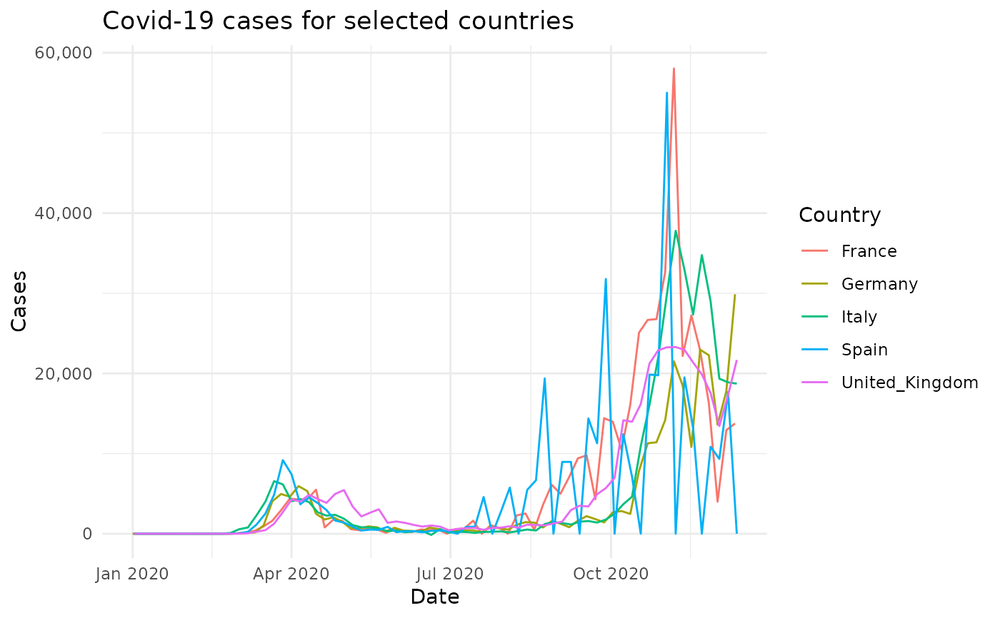

Reported COVID-19 infections, and deaths, collected and collated by the European Centre for Disease Prevention and Control (ECDC, provided by day and country. Data were collated and published up to 14th December 2020, and have been tidied so they are easily usable within the `tidyverse` of packages.
data(covid19)Tibble with seven columns
The date cases were reported
A `factor` for the geographical continent in which the reporting country is located.
A `factor` for the country or territory reporting the data.
A `factor` for the a three-letter country or territory code.
The reported population of the country for 2019, taken from Eurostat for Europe and the World Bank for the rest of the world.
The reported number of positive cases.
The reported number of deaths.
Data sourced from European Centre for Disease Prevention and Control which is available under the open licence, compatible with the CC BY 4.0 license, further details available at ECDC.
data(covid19)
library(dplyr)
library(ggplot2)
library(scales)
# Create a plot of the performance for England over time
covid19 %>%
filter(countries_and_territories ==
c("United_Kingdom", "Italy", "France", "Germany", "Spain")) %>%
ggplot(aes(x = date_reported, y = cases, col = countries_and_territories)) +
geom_line() +
scale_color_discrete("Country") +
scale_y_continuous(labels = comma) +
labs(
y = "Cases", x = "Date", title = "Covid-19 cases for selected countries",
alt = "A plot of covid-19 cases in France, Germany, Italy, Spain & the UK"
) +
theme_minimal()
